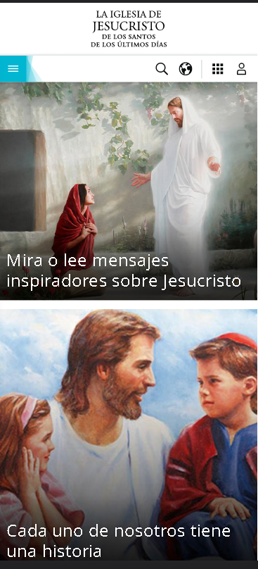
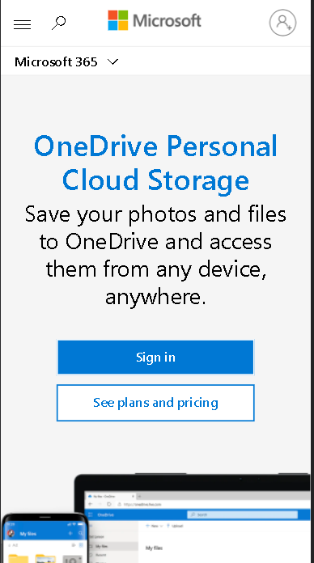
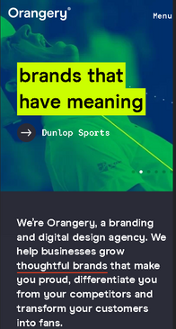

Proximity
Church of Jesus Christ LDS
Church of Jesus Christ LDS
Most of the elements in this website are very related and grouped visually. If you see, every image has its own text, creating less clutter and making for a more organized layout. Many Items unrelated are placed further apart because they emphasize their lack of relationship.
Alignment
Microsoft Corporation
Microsoft
On this website, all the elements are placed over a specific area, enhancing the overall visual appeal of this page layout If you see, this Alignment was applied to the Typography element and images. Frequent type of Alignment applied was the Center
Contrast
Orangery
Orangery.com
It is important to mention, this site has many element with high contrast, it means the items are very different from another. This makes the design more dynamic and, therefore, more effective at communicating its message.